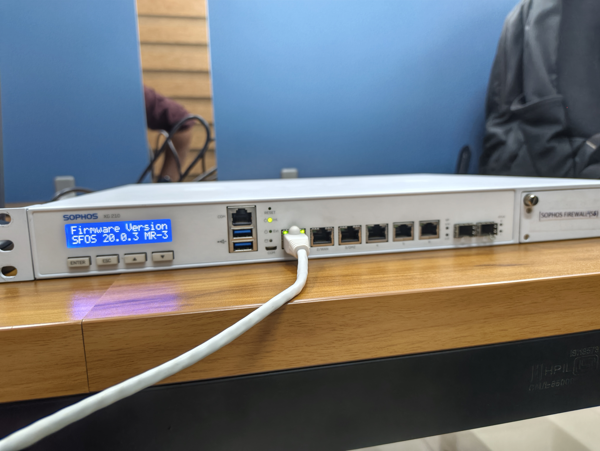
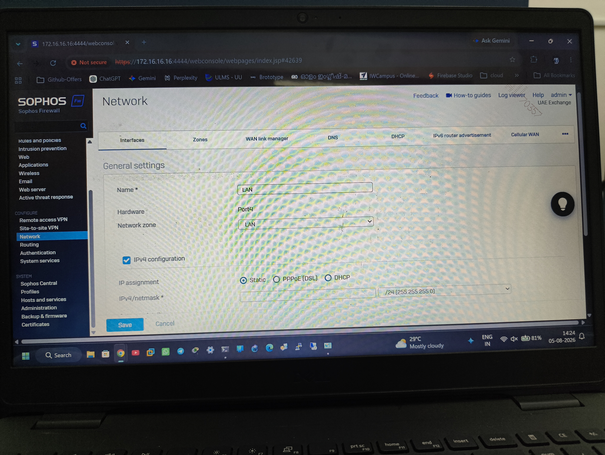

Sophos XG 210 Next-Generation Firewall Commissioning & Security Policy Deployment
Physical rack staging, administrative out-of-band commissioning, and comprehensive perimeter defense on an enterprise Sophos XG 210 Next-Generation Firewall running SFOS 20.0.3 MR-3. Implemented granular network zone segmentation, static IPv4 interface mappings on Port4 for trusted LAN enclaves, stateful firewall rules, Intrusion Prevention (IPS), and web/application filtering under administrative control (admin - UAE Exchange).
Physical Hardware Staging & Front LCD Diagnostic Verification
Appliance inspection, port allocation, and firmware boot validation on Sophos XG 210.
Staged the enterprise 1U rackmount Sophos XG 210 (Rev.3) next-generation firewall on the staging bench. The appliance features high-throughput multi-core processing, multi-gigabit hardware acceleration, and modular connectivity for enterprise edge deployment:
- • SFOS 20.0.3 MR-3 validated
- • Backlit front LCD panel active
- • Hardware keypad navigation (Enter/Esc)
- • Self-test diagnostics passed 100%
- • Port 1: LAN (GbE Copper RJ-45)
- • Port 2: WAN • Port 3: DMZ
- • Ports 4, 5, 6: GbE Switched Copper
- • Dual SFP 1GbE Optical Fiber Slots
- • RJ-45 Serial COM Console
- • Micro-USB Direct Console port
- • USB 3.0 Diagnostic & Backup ports
- • Internal hardware monitoring sensors
Connected the primary staging workstation to Port 1 using an unshielded twisted pair Cat6 patch cable with link/activity LED confirmation (solid green 1 Gbps link negotiation).
Out-of-Band WebAdmin Initial Commissioning & Administrative Hardening
Establishing encrypted administrative access via HTTPS port 4444 and credential governance.
Accessed the Sophos WebAdmin console at https://172.16.16.16:4444/webconsole/ over a hardened browser connection. Initialized the administrative profile under session identity admin - UAE Exchange:
Role-Based Access Control (RBAC)
Configured administrative credential authentication, enforcing complex password parameters, administrator lockout thresholds against brute-force attacks, and session idle timeout restrictions.
Management Service Isolation
Restricted WebAdmin console, SSH, and SNMP management access strictly to designated internal management subnets, completely disabling administrative exposure to the untrusted WAN zone.
Interface Addressing, Zone Segmentation & Port4 LAN Provisioning
Dividing physical hardware into logical security enclaves with static IPv4 addressing.
Under the Network → Interfaces configuration tab, mapped physical hardware interfaces to discrete security zones:
LANPort4 (GbE Copper)LAN (Trusted Enclave)Static (Fixed Subnet)/24 (255.255.255.0)Internal enterprise endpoints, workstations, access switches, and management systems.
Public-facing services and staging servers segregated from sensitive internal assets.
External ISP uplinks managed via WAN Link Manager with automatic health check monitoring.
Firewall Access Control Rules, NAT & Application Filtering
Orchestrating stateful packet inspection, network address translation, and protocol hygiene.
Under Rules and Policies, defined bidirectional traffic rules implementing the principle of least privilege:
NAT & Source Masquerading
Constructed Source NAT (SNAT) masquerade policies translating private RFC 1918 addresses from LAN/Port4 to egress public WAN interfaces, masking internal topology from external reconnaissance.
Web & Application Filtering
Applied categorization engines to block phishing, malware distribution points, command-and-control (C2) domains, and bandwidth-draining peer-to-peer protocols across user subnets.
Intrusion Prevention System (IPS) & Active Threat Defense
Deep packet inspection and real-time perimeter defense against network exploits.
Leveraged the dedicated Deep Packet Inspection (DPI) engine built into Sophos SFOS 20:
- IPS Signature Filtering: Bound tailored IPS sensor profiles protecting against common CVE vulnerabilities, buffer overflows, and remote code execution (RCE) attempts.
- Active Threat Response: Configured automated threat isolation to instantly revoke network egress for compromised hosts exhibiting anomalous beaconing behavior.
- Live Connection Tracking: Monitored concurrent TCP sessions, state table utilization, and drop statistics directly inside the Log Viewer for rapid anomaly diagnosis.
Sophos Firewall Staging Gallery
High-resolution physical appliance photography & WebAdmin console configuration

Sophos XG 210 Appliance & SFOS 20.0.3 MR-3 LCD Display
1U rackmount chassis, front backlit LCD diagnostic status, Gigabit Ethernet interfaces, SFP optical slots, and management cabling.

Network Interface Configuration: Port4 Static IPv4 /24 LAN
WebAdmin management at 172.16.16.16:4444, configuring hardware Port4 on LAN zone with static IPv4 /24 subnet, rules, and policies.